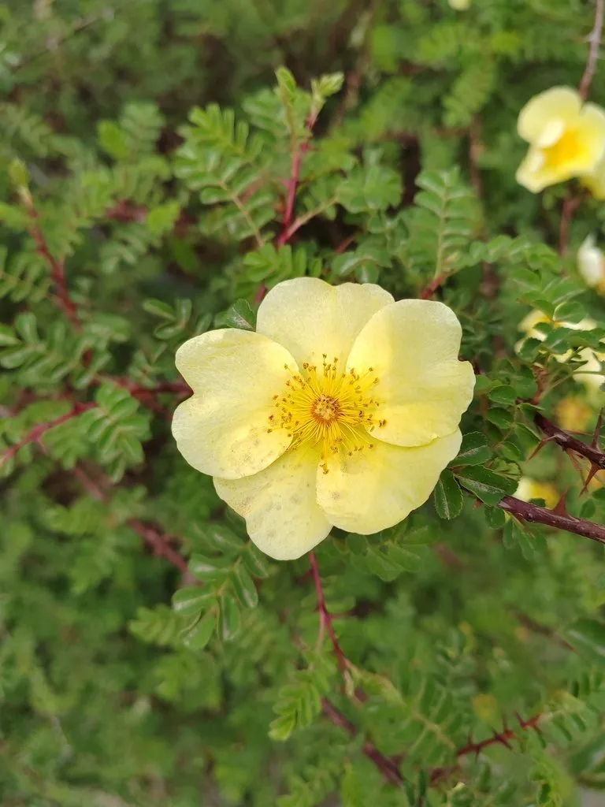

灌木与花木 · 植物界
黄刺玫 Rosa xanthina

蔷薇科落叶灌木，春季开黄色单瓣或重瓣花，枝条密生皮刺，耐寒耐旱，是北方庭院常见的观花灌木。
- 分类
- 门被子植物门纲木兰纲目蔷薇目科蔷薇科属蔷薇属
- 栖息环境
- 山坡灌丛、林缘与庭院，耐寒耐旱
- 地理分布
- 中国东北、华北、西北及山东、河南等地
- 保护级别
- 暂无评估；中国未列入国家重点保护野生植物名录
物种志
黄刺玫为蔷薇科蔷薇属落叶灌木，高 1–3 米，枝条直立，密生扁平皮刺。叶互生，奇数羽状复叶，小叶 7–13 枚，宽卵形，边缘具锯齿。花单生，黄色，单瓣或重瓣，花径 4–5 厘米，花期 4–6 月；果实为蔷薇果，球形，成熟时红褐色，果期 8–9 月。
黄刺玫原产中国东北、华北及西北山地，生于山坡灌丛与林缘，是北方常见的乡土花木。它喜光，耐寒、耐旱、耐瘠薄，适宜排水良好的砂质壤土。春季黄花满枝，花期长，是庭院、公园与道路绿化常见的观花灌木；果实可酿酒，花可提取芳香油，茎皮纤维可造纸。栽培以分株和扦插繁殖为主，需注意修剪过密枝与枯枝，保持株丛通风透光。
形态与习性
- 株高1–3 米，枝条密生皮刺
- 花期4–6 月，花黄色
- 果期8–9 月，蔷薇果红褐色
- 光照喜光，阳光充足开花多
- 水分耐旱，忌积水
- 土壤排水良好的砂质壤土
- 主要用途庭院观花、花篱，花提取芳香油
趣味知识
- 黄刺玫是北方春季最常见的黄色观花灌木之一。
- 它的枝条密生扁平皮刺，修剪和采花时需戴手套。
- 黄刺玫耐寒耐旱，在华北可露地越冬。
- 果实可酿酒，花可提取芳香油，茎皮纤维可造纸。